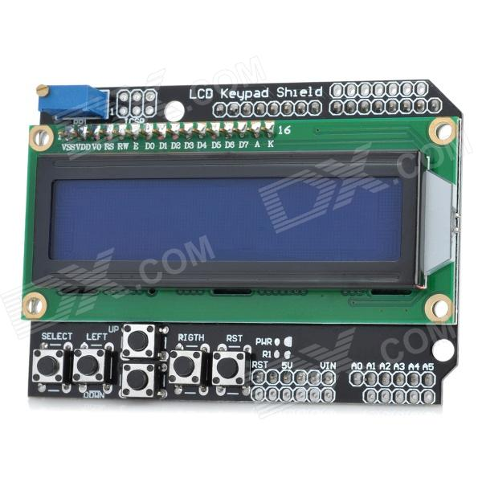
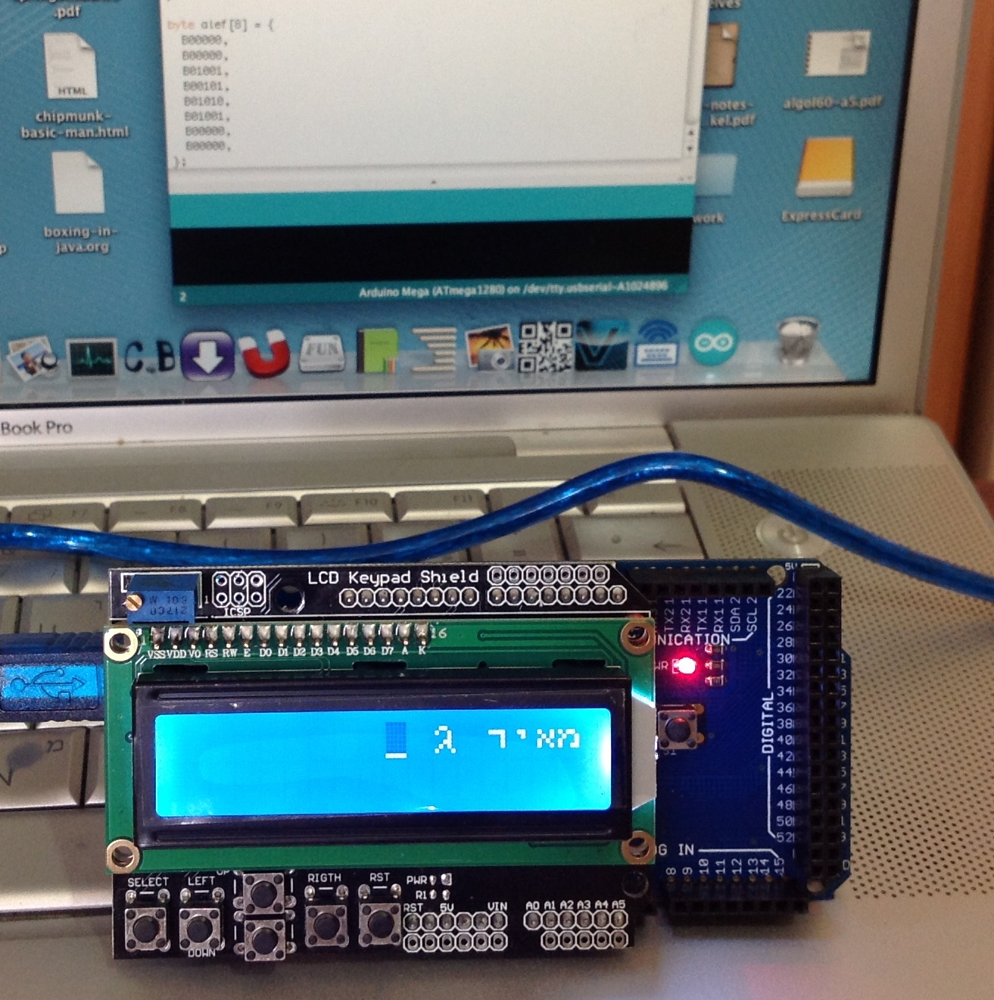
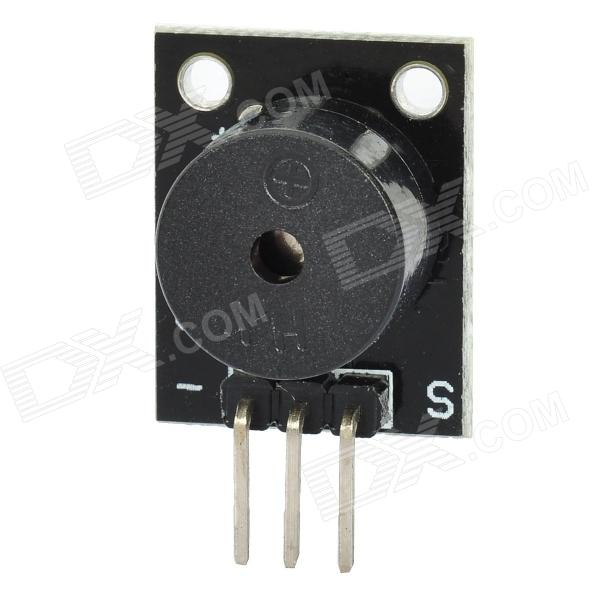
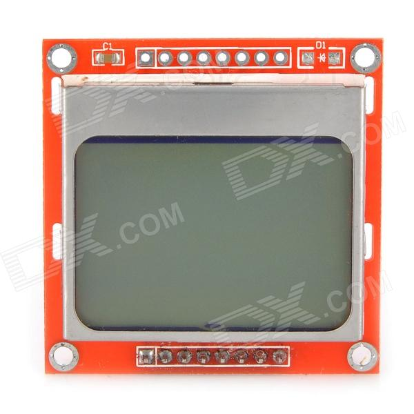
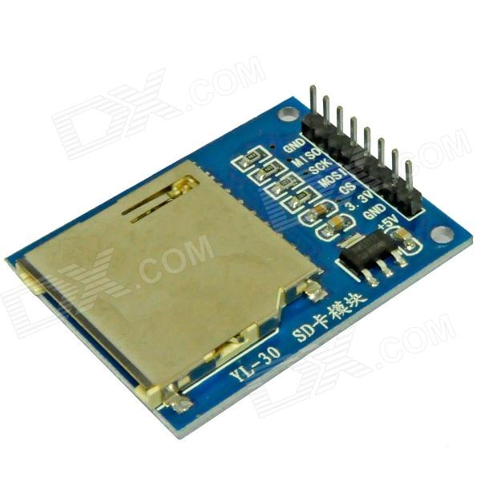
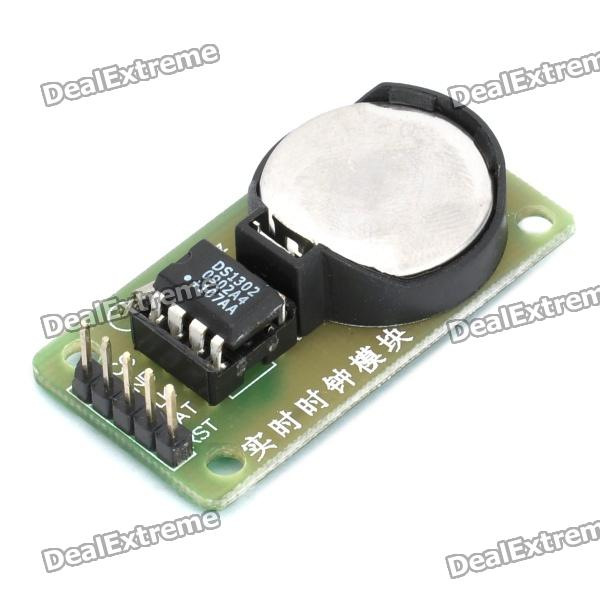
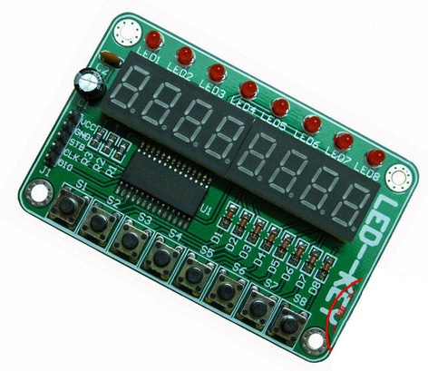

Arduino Notes
Table of Contents
- 1. Introduction
- 2. Software
- 3. Basic language reference
- 4. Hardware
- 4.1. The AVR Microarchitecture
- 4.2. Arduino Compatible Duemilanove Mega AVR ATmega1280-16AU USB Board
- 4.3. LCD Keypad Shield for Arduino Duemilanove & LCD 1602
- 4.4. Arduino Compatible Passive Speaker Buzzer Module - Black
- 4.5. Arduino Compatible 1.6" LCD Nokia 5110 LCD Module with White Backlit - Red + Silver
- 4.6. MCU Extension 4 x 4 16-Key Matrix Keyboard Module for Arduino - Green
- 4.7. SD Card Reading Writing Module for Arduino
- 4.8. DS1302 Real Time Clock Module with Battery CR2032
- 4.9. 5V 3.2" LCD12864 Screen Module with Backlit (Yellow & Green Screen/English Word Stock)
- 4.10. TM1638 LED Button(8-Bit Digital Tube+8 LED+8 Key) For Arduino ARM STM32 A104
- 4.11. Cables, Connectors, etc.
- 5. Hardware I need to get
- 6. Miscellaneous, unsorted, open questions
1 Introduction
The point of this page is to list all the information & material I accumulated over the course of working with Arduino. Ideally, this would include code snippets for all the hardware I worked with, so that it would be easier to get started on new projects
2 Software
- The official Arduino software is located here. It consists of a Java application that includes a compiler for the Arduino platform, a simple IDE, and some functionality for transferring the compiled code to the Arduino board.
- I'm using Mac OSX 10.6.8. The Arduino board was mis-identified as a
FT232R USB UART: Product ID: 0x6001 Vendor ID: 0x0403 (Future Technology Devices International Limited) Version: 6.00 Serial Number: A1024896 Speed: Up to 12 Mb/sec Manufacturer: FTDI Location ID: 0x1d100000 / 3 Current Available (mA): 500 Current Required (mA): 90
It turns out that I was missing an FTDI driver for emulating a COM port using a USB port. The drivers are available here.
3 Basic language reference
- The official language reference is located here. This includes the basic functions that are available on any Arduino board.
- Every C/C++ program for the Arduino includes two procedures:
void setup();which runs once, upon startup, andvoid loop();which runs repeatedly.
4 Hardware
4.1 The AVR Microarchitecture
4.3 LCD Keypad Shield for Arduino Duemilanove & LCD 1602

4.3.1 Rationale for getting it
This is a simple display and some buttons. Enough to display output, read input from the buttons. Can be used to scroll through menu options, etc.
4.3.2 Programming the LCD Keypad
- Manufacturer & data
- It was kind of disappointing to learn that the LCD Keypad only permits 8 glyphs to be defined (0-7), so that the full range of Hebrew cannot be defined. Clearly, someone has already thought of this possibility, since the LiquidCrystal library supports writing in either left-to-right or right-to-left, controllable via the
lcd.leftToRight();andlcd.rightToLeft();commands.

4.4 Arduino Compatible Passive Speaker Buzzer Module - Black

- The buzzer comes with 3 pins, whereas most buzzers I see on various Arduino tutorials come with only two. I have no idea what the third pin is like. One of the pins is marked with a minus sign '-', so it is plugged into GND on the Arduino board. This makes the second (middle) pin fit into 13, and the third pin fit into 12. Attempts to use 13 failed. Attempts to use 12 succeeded beautifully.
- To operate the buzzer, the
void init();function must contain an initialization to the buzzer output pin, which in this case is 12. Ideally, this should be set using a C macro to abstract the number of the pin:pinMode(BUZZER_OUTPUT, OUTPUT);. Thevoid loop();function should contain
4.5 Arduino Compatible 1.6" LCD Nokia 5110 LCD Module with White Backlit - Red + Silver

- Spec & technical details are here.
4.7 SD Card Reading Writing Module for Arduino

4.7.1 Rationale for getting it
The SD card is an inexpensive (US$2.70) way of storing information for or by the Arduino. This memory is non-volatile, and the API for the SD card comes with functions for creating directories, reading, writing, and deleting files, etc.
Because memory is scarce on the Arduino, large amounts of data, structured or unstructured, can be stored on an SD card and used by Arduino programs.
For threaded code, this offers a simple and effective way to store code & data, so that the only native code need be the address interpreter. The control stack, the data stack, the dictionary, etc, can all reside as files on the SD card, and accessed via random-access IO operations.
4.8 DS1302 Real Time Clock Module with Battery CR2032

4.8.1 Rationale for getting it
The Arduino does not come with a built-in, real-time clock (!). This means that it cannot tell time. For any project that requires keeping time (alarm clock, etc) you want to get a real time clock shield. The beauty of this unit is that it has a very simple API for setting & getting the time, and the battery will let it keep the time for several years, independently of the power supply to the main board.
4.10 TM1638 LED Button(8-Bit Digital Tube+8 LED+8 Key) For Arduino ARM STM32 A104

- Specs in English can be found here.
4.11 Cables, Connectors, etc.
The wires that are used to connect pins on PCB are called Dupont jumper wires. The pins are called pin headers.
- General: Pins
- Male-to-female jumper wires
- Male-to-male jumper wires
- Female-to-female jumper wires
- Pin headers for soldering to a PCB
- 840-pin solderless breadboard. Comes with notches and grooves on the side, so that any number of similar breadboards can be fitten to form a longer and wider work area.
5 Hardware I need to get
- A GPS fence
- A touch screen
- Connectors to connect shields to the main board
- A bluetooth shield
- An FM radio shield
- New Version Pro Mini Atmega328P Microcontroller Board - White
- EFCom Pro Wireless 850/900/1800/1900MHz GPRS/GSM Module w/ Antenna - White
- JY-MCU Arduino Bluetooth Wireless Serial Port Module
- USB Host Shield 2.0 Board
- 2.4GHz NRF24L01+ Wireless Communication Module for Arduino - Green (2 PCS)
- DIY Color LCD Shield Nokia 6100 Expansion Board - White
- New Version Pro Mini Atmega328P Microcontroller Board - White
6 Miscellaneous, unsorted, open questions
- Connecting the Arduino board
- What buttons are on the board, and which ones can I control?
- How do I write to the equivalent of the console? — something that can be recognized from the Arduino IDE.
- Connecting the LCD keypad
- Recognising the buttons for press & release
- Writing bitmaps to the LCD
- Connecting to the SD card
- What is the max file size?
- How many open files can one have simultaneously?